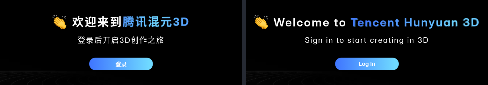

Use Hunyuan 3D in English
A free Chrome extension that translates the Chinese interface of Tencent Hunyuan 3D
(3d.hunyuan.tencent.com) into English or Russian, including the Studio, explains every 3D setting in a tooltip,
and makes life with several accounts easy.

Features
The whole site in English
Main site, generators and the Studio (topology, texturing, rigging, animation, component split). No Chinese flashing on load.
Readable English
About 620 fixes of Tencent's own translation: "Degreasing treatment" becomes "Remove Baked Lighting", "Bone Binding" becomes "Rigging & Skinning".
Tooltips for 3D terms
Face count, retopology, quads vs triangles, baked normals, UV, PBR, rigging, seed, export formats: what each one means and what to pick. In English or Russian.
Account switcher
Save several logins and switch in one click. The toolbar icon shows generations left today across all accounts; when one runs out, the site offers the next.
Prompt tools
Write a prompt in Russian and turn it into English or Chinese with one button (on-device translator). Prompt templates: presets and your own.
Model library
Every model from every account on one page. Download one or a batch, with readable file names instead of random hashes.
Russian interface
Prefer Russian? Switch the whole site to Russian in the extension's settings. Every extra feature can be turned off there too.
Private
Leftover text goes through Chrome's built-in on-device translator. Logins stay in your browser. Nothing is sent to third-party servers. Open source, MIT license.
Install in 1 minute
- Download the zip from Releases and unzip it.
- Open
chrome://extensionsand turn on Developer mode (top right). - Click Load unpacked and select the unzipped folder.
- Open or reload 3d.hunyuan.tencent.com.
Works in Chrome, Edge, Brave and Yandex Browser.
FAQ
How do I change Hunyuan 3D to English?
The Chinese site has no language switch, and adding ?lang=en to the URL does nothing. The site already contains Tencent's English translation but never turns it on. This extension turns it on before the page starts.
Why not use the international site?
The global version is blocked in some regions and on VPN/hosting IPs. The Chinese site at 3d.hunyuan.tencent.com works from more places, and the extension makes it usable without knowing Chinese.
Is it official?
No. It is an independent open-source project, not affiliated with Tencent.
Can I use several Hunyuan 3D accounts?
Yes. Save each login once in the extension's popup and switch with a click. The extension checks how many generations each account has left (without logging you out) and shows the total on its icon.
Why isn't it in the Chrome Web Store?
It's a small free project; installing the zip takes a minute. Updates: download the new zip, replace the folder and press ↻ on the extension.
Hunyuan 3D на русском и английском
Бесплатное расширение для Chrome. Переводит китайский интерфейс Tencent Hunyuan 3D (3d.hunyuan.tencent.com) на русский или английский, включая Studio, объясняет каждую 3D-настройку и упрощает работу с несколькими аккаунтами.
- Весь сайт на русском или английском (язык выбирается в настройках расширения): генерация по тексту и картинке, Studio, ретопология, текстуры, риг, анимация, разделение на части.
- Подсказки на русском к 70 терминам: полигоны, quads/triangles, запекание нормалей, UV-развёртка, PBR, риг, seed, форматы экспорта.
- Нормальный английский вместо машинного перевода Tencent: около 620 исправлений.
- Несколько аккаунтов: сохраните входы и переключайтесь в один клик. На значке — сколько генераций осталось на всех аккаунтах; когда на одном кончились, сайт предложит следующий.
- Промпты: пишите по-русски — кнопка переведёт на английский или китайский (офлайн-переводчик Chrome). Шаблоны промптов.
- Библиотека моделей: все модели со всех аккаунтов на одной странице, скачивание пачкой с понятными именами файлов.
- Всё, кроме перевода, отключается в настройках. Входы хранятся только в браузере, на сторонние серверы ничего не уходит. Открытый код, лицензия MIT.
Установка
- Скачайте zip из Releases и распакуйте.
- Откройте
chrome://extensionsи включите Режим разработчика. - Нажмите Загрузить распакованное расширение и выберите папку.
- Откройте 3d.hunyuan.tencent.com.
Работает в Chrome, Edge, Brave и Яндекс Браузере.
Как перевести Hunyuan 3D на русский или английский?
Переключателя языка на китайском сайте нет. Параметр ?lang=en тоже не помогает. Расширение включает встроенный английский перевод Tencent, а по желанию — русский интерфейс (кнопка расширения → ⚙ → Язык сайта).
Можно ли пользоваться несколькими аккаунтами?
Да. Сохраните каждый вход в окне расширения и переключайтесь кликом. Остаток генераций проверяется у всех аккаунтов в фоне, без выхода из текущего. Лимиты обновляются в 19:00 МСК.
Почему не международная версия?
Глобальная версия Hunyuan 3D не открывается из России и с адресов VPN. Китайская работает, а с расширением ей можно пользоваться без знания китайского.